COLOR ME! [Poster/2018]


COLOR ME! [Poster/2018]
THE LIFE OF MARGINALITY [Wall newspaper/2019]


WE LIVE IN A RAINBOW OF CHAOS [Album cover design/2020]

 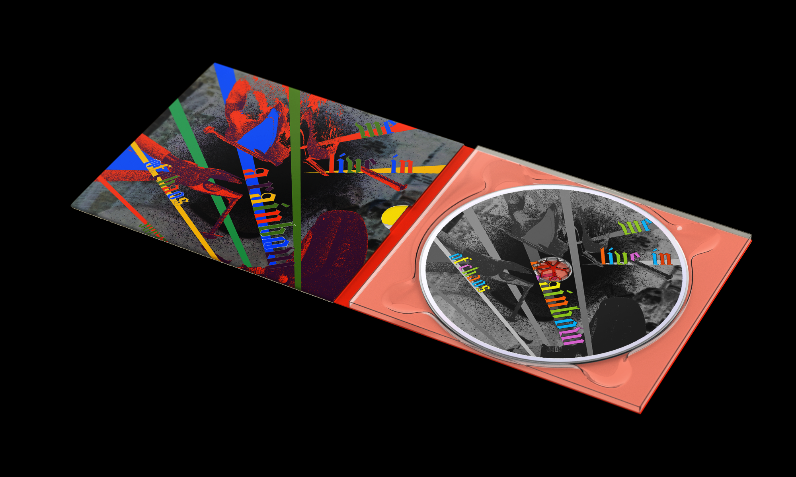
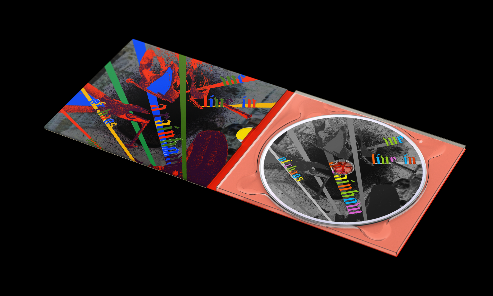


ANTARTIC PENGUINS [Book/2020]

 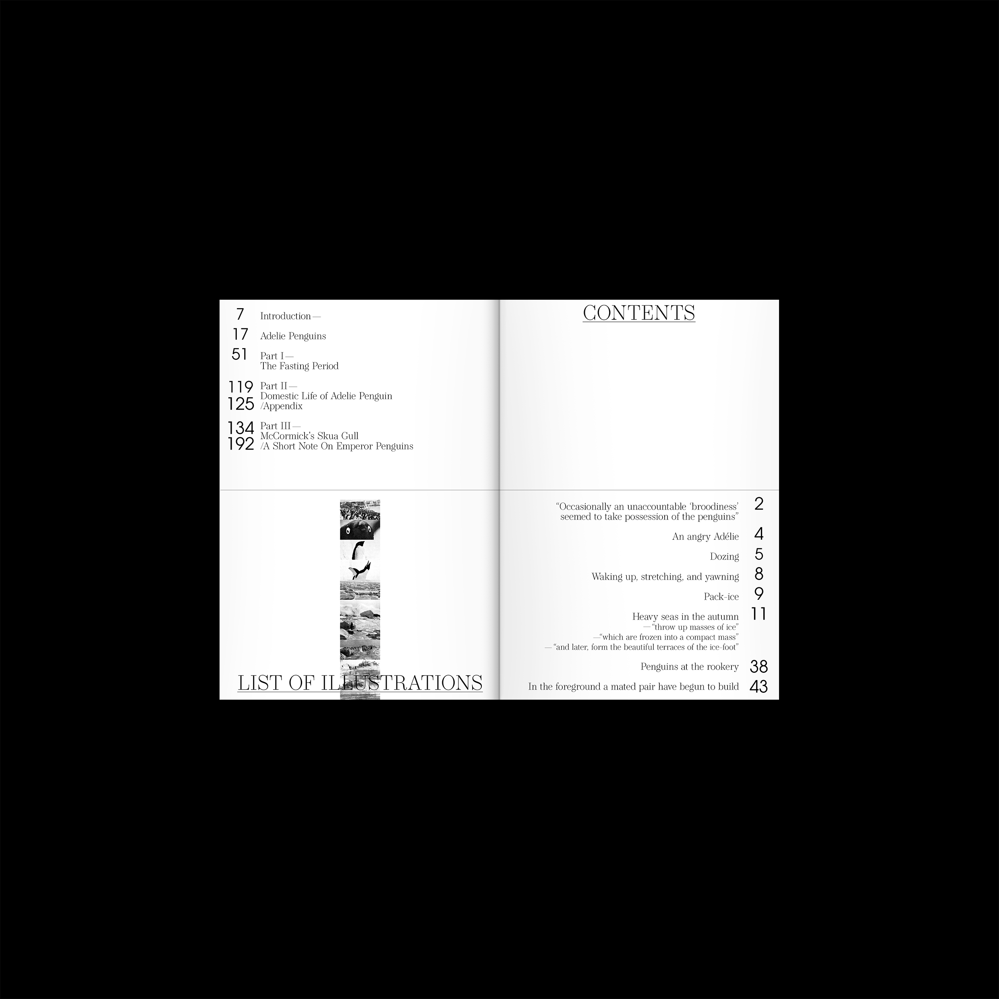
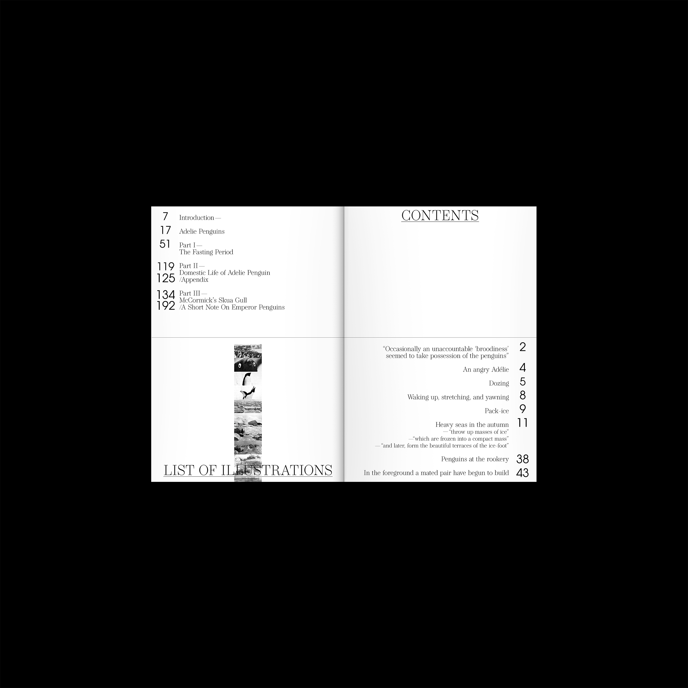
 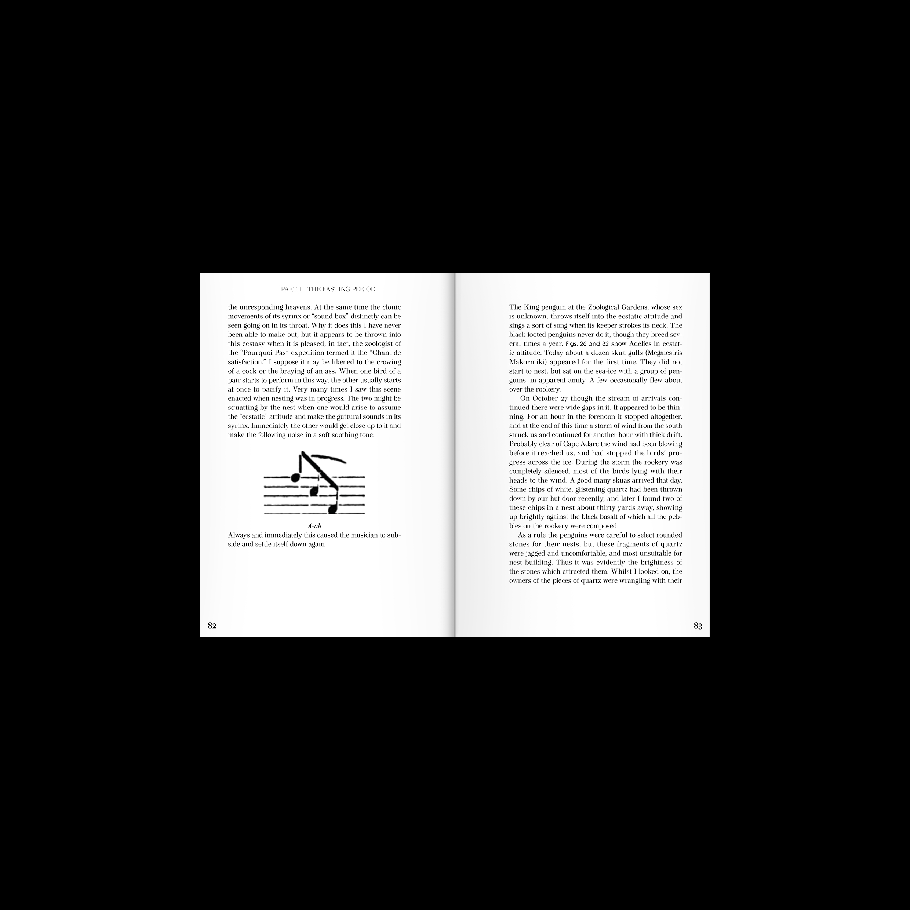
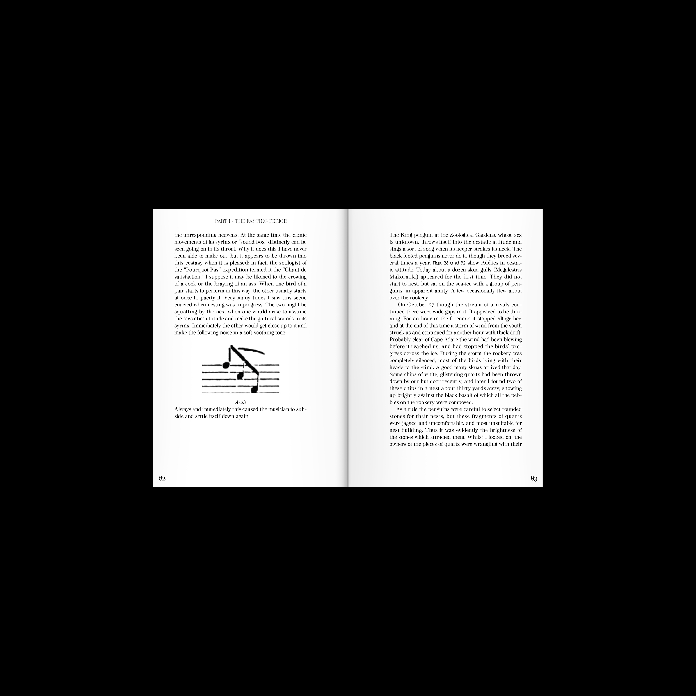
FRAGMENTS OF OBSCURITY [Video/2020]


LIKE THE COSMOS IN THE DIRT [Video/Book/2020]


ASTRO REGULAR [Font Design/2020]

 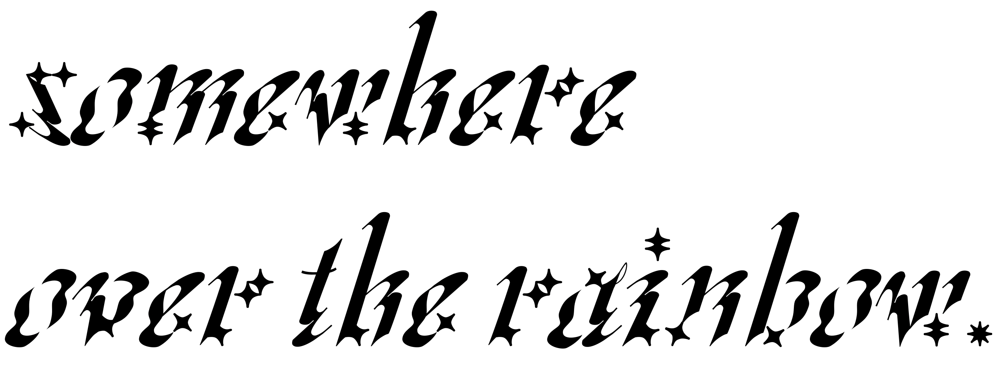
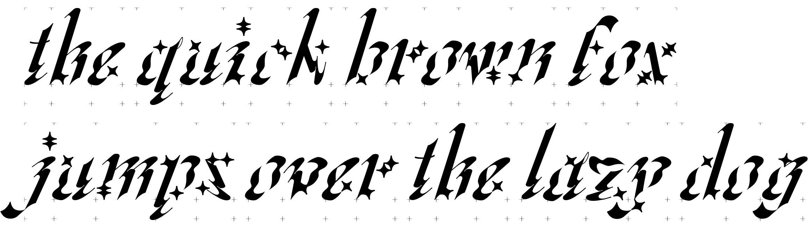
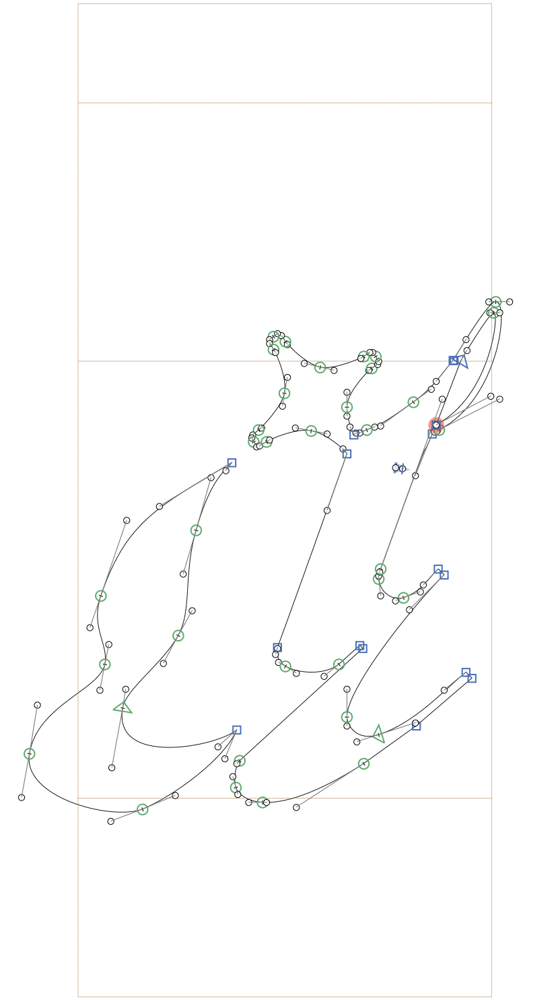
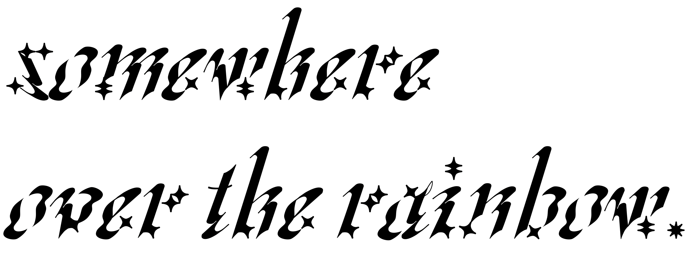
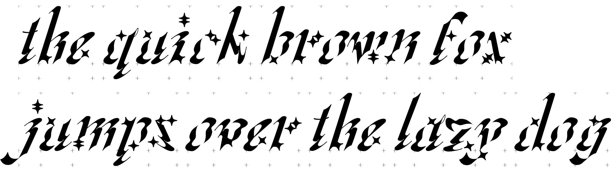
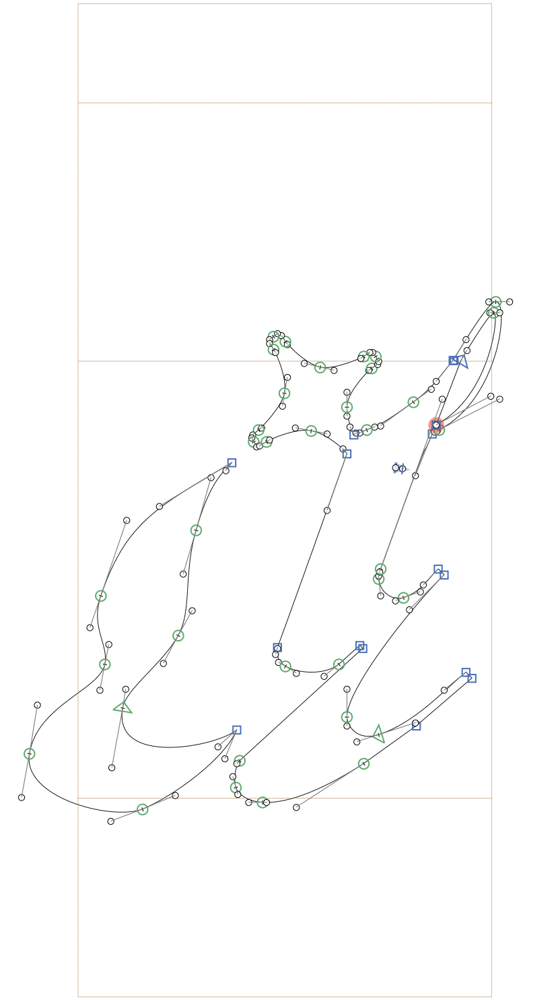
NO ONE IS TOO SMALL TO MAKE A DIFFERENCE [BOOK/2020]